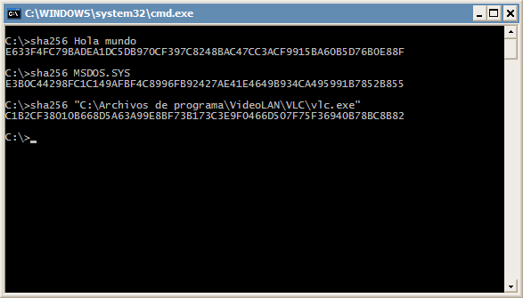

Generar un hash SHA-256 de una cadena de texto o archivo
El siguiente código fuente es un ejemplo de implementación del algoritmo SHA-256 en C y puede compilarse fácilmente (con Codeblocks por ejemplo) para crear un ejecutable de línea de comandos que genera un hash de un archivo o una cadena de texto. El programa al pasarle como argumento una cadena de texto o la ruta de un archivo (si el archivo se encuentra en el directorio activo es suficiente con el nombre, al pasarle una ruta absoluta hay que agregar comillas dobles, de lo contrario sería interpretado como texto) mostrará por pantalla el hash resultante.
La siguiente imagen muestra algunos ejemplos de uso, el primero genera el hash de la cadena de texto Hola mundo, en el segundo se obtiene el hash del archivo MSDOS.SYS que se encuentra en el directorio activo, y en el tercero se le pasa como argumento la ruta absoluta del archivo vlc.exe.
El código fuente consta de tres archivos: main.c, sha256.c y sha256.h
main.c
/**********************************************************
* Archivo: main.c
* Autor: Javier Ortega
* Licencia: Creative Commons
**********************************************************/
#include <stdio.h>
#include <stdlib.h>
#include "sha256.h"
void SHAstring(char*, char[]);
void SHAfile(FILE*, char[]);
// Función principal del programa
int main(int argc, char *argv[])
{
FILE *fp;
char sha256[64];
if (argc < 2) {
printf("uso: sha256 { cadena | archivo }\n");
return 0;
}
if ((fp=fopen(argv[1],"rb")) == NULL ) {
SHAstring(argv[1], sha256);
printf("%s\n", sha256);
} else {
SHAfile(fp, sha256);
printf("%s\n", sha256);
fclose(fp);
}
return 0;
}
// Función para generar el hash de una cadena de texto
void SHAstring(char *cadena, char str[])
{
SHA256_CTX ctx_sha;
unsigned char buff[33];
unsigned char hash[32];
unsigned int n;
int i;
char ch;
n = strlen(cadena);
for (i=0; i<n; i++) {
ch = *cadena++;
buff[i] = ch;
}
buff[33 - 1] = '\0';
sha256_init(&ctx_sha);
sha256_update(&ctx_sha,buff,n);
sha256_final(&ctx_sha,hash);
for (i=0; i < 32; i++) {
sprintf(str+i*2, "%02X", hash[i]);
}
}
// Función para generar el hash de un archivo
void SHAfile(FILE *fp, char str2[])
{
SHA256_CTX ctx_sha;
unsigned char buf2[32];
unsigned char hash2[32];
unsigned long n;
int i;
sha256_init(&ctx_sha);
while ((n = fread(buf2, 1, sizeof(buf2), fp)) > 0)
sha256_update(&ctx_sha,buf2,n);
sha256_final(&ctx_sha,hash2);
for (i=0; i < 32; i++) {
sprintf(str2+i*2, "%02X", hash2[i]);
}
}
sha256.c
#include <stdio.h>
#include <string.h>
#define uchar unsigned char // 8-bit byte
#define uint unsigned int // 32-bit word
// DBL_INT_ADD treats two unsigned ints a and b as one 64-bit integer and adds c to it
#define DBL_INT_ADD(a,b,c) if (a > 0xffffffff - (c)) ++b; a += c;
#define ROTLEFT(a,b) (((a) << (b)) | ((a) >> (32-(b))))
#define ROTRIGHT(a,b) (((a) >> (b)) | ((a) << (32-(b))))
#define CH(x,y,z) (((x) & (y)) ^ (~(x) & (z)))
#define MAJ(x,y,z) (((x) & (y)) ^ ((x) & (z)) ^ ((y) & (z)))
#define EP0(x) (ROTRIGHT(x,2) ^ ROTRIGHT(x,13) ^ ROTRIGHT(x,22))
#define EP1(x) (ROTRIGHT(x,6) ^ ROTRIGHT(x,11) ^ ROTRIGHT(x,25))
#define SIG0(x) (ROTRIGHT(x,7) ^ ROTRIGHT(x,18) ^ ((x) >> 3))
#define SIG1(x) (ROTRIGHT(x,17) ^ ROTRIGHT(x,19) ^ ((x) >> 10))
typedef struct {
uchar data[64];
uint datalen;
uint bitlen[2];
uint state[8];
} SHA256_CTX;
uint k[64] = {
0x428a2f98,0x71374491,0xb5c0fbcf,0xe9b5dba5,0x3956c25b,0x59f111f1,0x923f82a4,0xab1c5ed5,
0xd807aa98,0x12835b01,0x243185be,0x550c7dc3,0x72be5d74,0x80deb1fe,0x9bdc06a7,0xc19bf174,
0xe49b69c1,0xefbe4786,0x0fc19dc6,0x240ca1cc,0x2de92c6f,0x4a7484aa,0x5cb0a9dc,0x76f988da,
0x983e5152,0xa831c66d,0xb00327c8,0xbf597fc7,0xc6e00bf3,0xd5a79147,0x06ca6351,0x14292967,
0x27b70a85,0x2e1b2138,0x4d2c6dfc,0x53380d13,0x650a7354,0x766a0abb,0x81c2c92e,0x92722c85,
0xa2bfe8a1,0xa81a664b,0xc24b8b70,0xc76c51a3,0xd192e819,0xd6990624,0xf40e3585,0x106aa070,
0x19a4c116,0x1e376c08,0x2748774c,0x34b0bcb5,0x391c0cb3,0x4ed8aa4a,0x5b9cca4f,0x682e6ff3,
0x748f82ee,0x78a5636f,0x84c87814,0x8cc70208,0x90befffa,0xa4506ceb,0xbef9a3f7,0xc67178f2
};
void sha256_transform(SHA256_CTX *ctx, uchar data[])
{
uint a,b,c,d,e,f,g,h,i,j,t1,t2,m[64];
for (i=0,j=0; i < 16; ++i, j += 4)
m[i] = (data[j] << 24) | (data[j+1] << 16) | (data[j+2] << 8) | (data[j+3]);
for ( ; i < 64; ++i)
m[i] = SIG1(m[i-2]) + m[i-7] + SIG0(m[i-15]) + m[i-16];
a = ctx->state[0];
b = ctx->state[1];
c = ctx->state[2];
d = ctx->state[3];
e = ctx->state[4];
f = ctx->state[5];
g = ctx->state[6];
h = ctx->state[7];
for (i = 0; i < 64; ++i) {
t1 = h + EP1(e) + CH(e,f,g) + k[i] + m[i];
t2 = EP0(a) + MAJ(a,b,c);
h = g;
g = f;
f = e;
e = d + t1;
d = c;
c = b;
b = a;
a = t1 + t2;
}
ctx->state[0] += a;
ctx->state[1] += b;
ctx->state[2] += c;
ctx->state[3] += d;
ctx->state[4] += e;
ctx->state[5] += f;
ctx->state[6] += g;
ctx->state[7] += h;
}
void sha256_init(SHA256_CTX *ctx)
{
ctx->datalen = 0;
ctx->bitlen[0] = 0;
ctx->bitlen[1] = 0;
ctx->state[0] = 0x6a09e667;
ctx->state[1] = 0xbb67ae85;
ctx->state[2] = 0x3c6ef372;
ctx->state[3] = 0xa54ff53a;
ctx->state[4] = 0x510e527f;
ctx->state[5] = 0x9b05688c;
ctx->state[6] = 0x1f83d9ab;
ctx->state[7] = 0x5be0cd19;
}
void sha256_update(SHA256_CTX *ctx, uchar data[], uint len)
{
//uint t,i;
uint i;
for (i=0; i < len; ++i) {
ctx->data[ctx->datalen] = data[i];
ctx->datalen++;
if (ctx->datalen == 64) {
sha256_transform(ctx,ctx->data);
DBL_INT_ADD(ctx->bitlen[0],ctx->bitlen[1],512);
ctx->datalen = 0;
}
}
}
void sha256_final(SHA256_CTX *ctx, uchar hash[])
{
uint i;
i = ctx->datalen;
// Pad whatever data is left in the buffer.
if (ctx->datalen < 56) {
ctx->data[i++] = 0x80;
while (i < 56)
ctx->data[i++] = 0x00;
}
else {
ctx->data[i++] = 0x80;
while (i < 64)
ctx->data[i++] = 0x00;
sha256_transform(ctx,ctx->data);
memset(ctx->data,0,56);
}
// Append to the padding the total message's length in bits and transform.
DBL_INT_ADD(ctx->bitlen[0],ctx->bitlen[1],ctx->datalen * 8);
ctx->data[63] = ctx->bitlen[0];
ctx->data[62] = ctx->bitlen[0] >> 8;
ctx->data[61] = ctx->bitlen[0] >> 16;
ctx->data[60] = ctx->bitlen[0] >> 24;
ctx->data[59] = ctx->bitlen[1];
ctx->data[58] = ctx->bitlen[1] >> 8;
ctx->data[57] = ctx->bitlen[1] >> 16;
ctx->data[56] = ctx->bitlen[1] >> 24;
sha256_transform(ctx,ctx->data);
// Since this implementation uses little endian byte ordering and SHA uses big endian,
// reverse all the bytes when copying the final state to the output hash.
for (i=0; i < 4; ++i) {
hash[i] = (ctx->state[0] >> (24-i*8)) & 0x000000ff;
hash[i+4] = (ctx->state[1] >> (24-i*8)) & 0x000000ff;
hash[i+8] = (ctx->state[2] >> (24-i*8)) & 0x000000ff;
hash[i+12] = (ctx->state[3] >> (24-i*8)) & 0x000000ff;
hash[i+16] = (ctx->state[4] >> (24-i*8)) & 0x000000ff;
hash[i+20] = (ctx->state[5] >> (24-i*8)) & 0x000000ff;
hash[i+24] = (ctx->state[6] >> (24-i*8)) & 0x000000ff;
hash[i+28] = (ctx->state[7] >> (24-i*8)) & 0x000000ff;
}
}
sha256.h
/*********************************************************************
* Filename: sha256.h
* Author: Brad Conte (brad AT bradconte.com)
* Copyright:
* Disclaimer: This code is presented "as is" without any guarantees.
* Details: Defines the API for the corresponding SHA1 implementation.
*********************************************************************/
#ifndef SHA256_H
#define SHA256_H
/*************************** HEADER FILES ***************************/
#include <stddef.h>
/****************************** MACROS ******************************/
#define SHA256_BLOCK_SIZE 32 // SHA256 outputs a 32 byte digest
/**************************** DATA TYPES ****************************/
typedef unsigned char BYTE; // 8-bit byte
typedef unsigned int WORD; // 32-bit word, change to "long" for 16-bit machines
typedef struct {
BYTE data[64];
WORD datalen;
__int64 bitlen;
WORD state[8];
} SHA256_CTX;
/*********************** FUNCTION DECLARATIONS **********************/
void sha256_init(SHA256_CTX *ctx);
void sha256_update(SHA256_CTX *ctx, const BYTE data[], size_t len);
void sha256_final(SHA256_CTX *ctx, BYTE hash[]);
#endif // SHA256_H
Una opción interesante sería compilar el ejecutable como 'sha256.exe' y colocar el archivo en la carpeta Windows para que pueda ser ejecutado mediante la consola desde cualquier directorio.
Javi